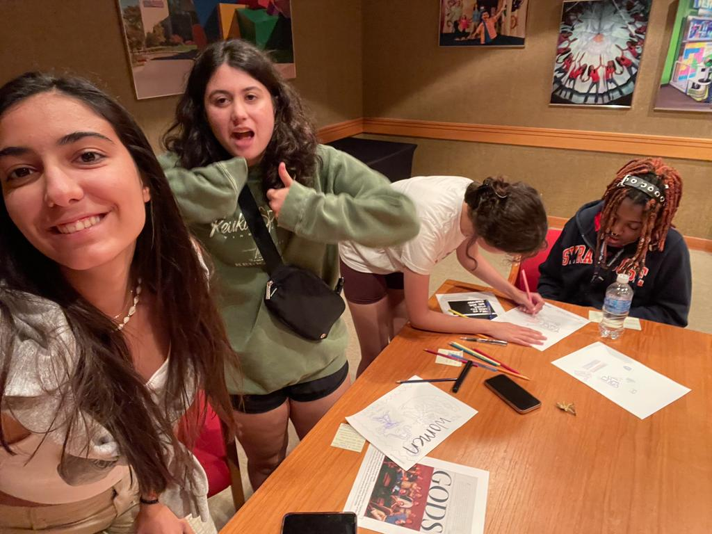

Ipek Yuzcelik 07/27/2023
Yesterday we had a wonderfull time at the STRONG Museum. Before exploring the museum we created and designed our own exhibits. My main artifact was the discrimination against women in the gaming sector. We ended up creating an exhibit mainly on gendr discrimination.
You can see our fun photos from our workshop bellow.
Aftrer the workshop we started expolrin the museum. My favorite place/exhibit was the "Age of Empires". I enjoyed learning about the history of game making. Also played the original version of the Age of Empires which was a great experience. I also loved playing games in the World of Video Games.
You can see moments from our trip to STRONG Museum bellow.


Ipek Yuzcelik 07/25/2023
My favorite AI generated character is WALL-E. In the movie WALL-E is such a heartwarming character that brings joy to me. WALL-E tells its story while delivering a crucial message of what society is trending towards. After watching WALL-E I was clearly more sympathetic about robots and felt no fear towards them. Seeing the robot today expanded my imagination and really helped me understand the limitations of them. Also my interaction with Midjourney AI made me realize the different fields the Artificial Intelligence is used in. We can be less lazy in future by having some ground rules such as doing housework and personal needs ourselves.
You can see a picture of my favorite AI character WALL-E bellow.
Ipek Yuzcelik 07/24/2023
The infographic bellow is made in order to remind and raise awarness about the benefits of listening music.
_page-0001.jpg)
Ipek Yuzcelik 07/21/2023
The video below is a HTML tutorial on the foundation and necesity of HTML it also explains basic commands of HTML. I learned new structural tags such as division which are used to group elemnts together where they can be styled to represent complex elements. The reason I love this video is that they explain everything in a short amount time and really basic.
Ipek Yuzcelik 07/21/2023
In todays class we learned a lot about game developement. And designed a competitive game using cryptography. Our games name is CrypthoRush. We have a stack of card which have words about technology written on them. The game starts when the two players rolls the dice. The numbers the dices state are the cypher key and this key is used in order to encrypt the words chosen from the stack. The time limit is only five minutes. You can earn points by encrypting the most words. Every letter is one point. The player with most points wins!
Good luck and have fun!

Ipek Yuzcelik 07/19/2023
This meme about machine learning perfectly shows the refection of machine learning on the society. Also this meme states that how libraries used for machine learning makes it easier. Libraries used in machine learning are preconstructed and collected for saving us from writing the same sets of codes all over again. The reflection of machine learning is always thought to be complicated and hard. While it is analyzation of a dataset and training a model for computer to making able to recognize similar patterns. Also statistics serve as a foundation for analysis and dealing with data in data science. A lot of performance metrics used in machine learning algorithms like accuracy, precision, recall, f-score, root mean squared error, etc. use statistics as the base.

Ipek Yuzcelik 07/18/2023
Genevieve Marie Grotjan Feinstein (April 30, 1913 – August 10, 2006) was an American mathematician and cryptanalyst. She worked for the Signals Intelligence Service throughout World War II, during which time she played an important role in deciphering the Japanese cryptography machine Purple, and later worked on the Cold War-era Venona project.
After graduating as a math teacher with a degree she was unable to find a job as one so instead, she started working at the Railroad Retirement Board. She was working as a statistical clerk. She got the attention of William F. Friedman by scoring a high score on a civil service mathematics test. she was hired to work with him as a junior cryptanalyst for the Army's Signals Intelligence Service (SIS) for eight months. She aimed to analyze the encryption system used in the Japanese Type B Cipher Machine, code-named Purple by SIS. In 1940 the Chiper had cracked which she played an important role in cracking. For her wartime service, she was awarded the Exceptional Civilian Service Award.
Later she was assigned to the Venona project which had the aim to decode encrypted messages sent by Soviet KGB and Main Intelligence Directorate (GRU). She made Americans realize when an individual one-time pad cipher was (improperly) reused. She continued working at the SIS after World War II. After resigning because of the Cold War she started teaching at George Mason University as a Professor of Mathematics. Her significant works took place till 2006.